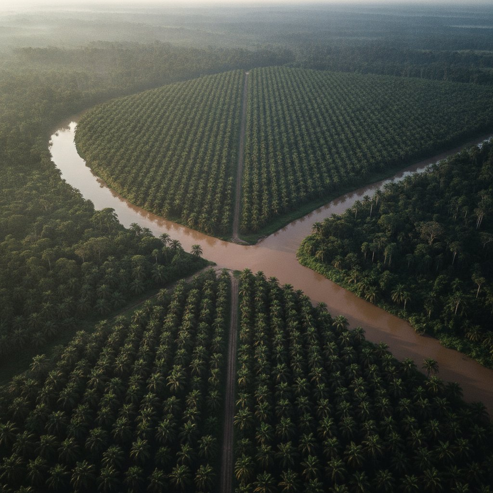
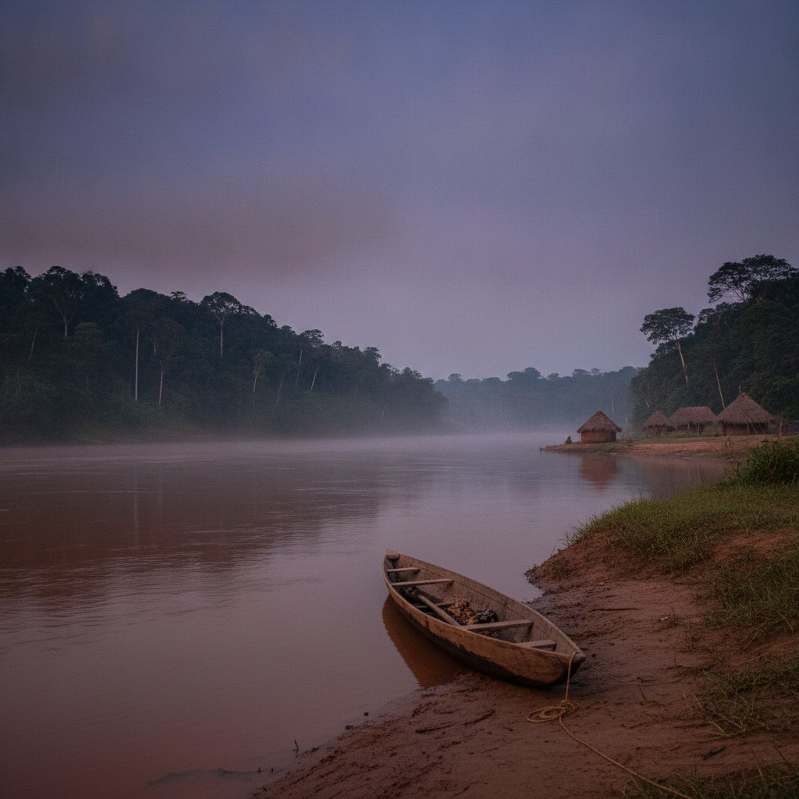
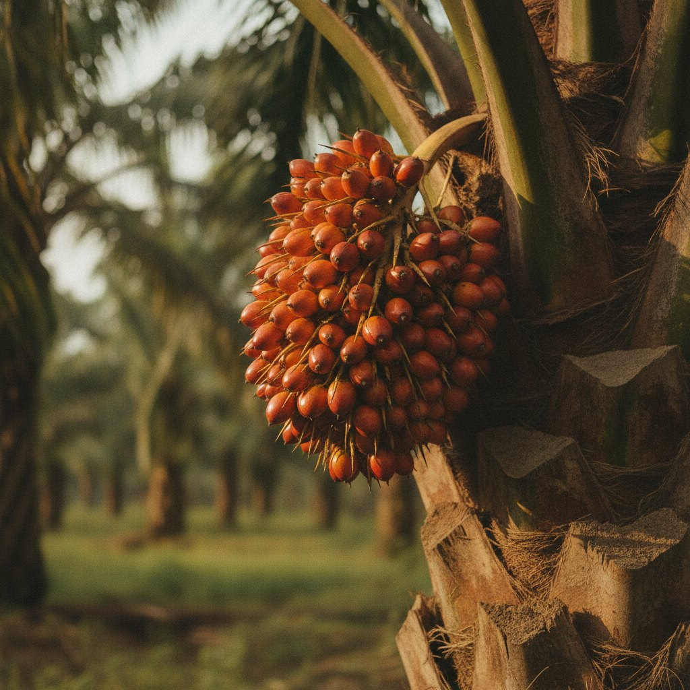

Une terre entre deux rivières.
Ibenga, district d'Enyellé, département de la Likouala, au nord de la République du Congo. Là où l'Ibenga rejoint l'Oubangui.
Ibenga, Enyellé, Likouala.
Le domaine est bordé par la rivière Ibenga à son point de confluence avec l'Oubangui, qui marque la frontière avec la République démocratique du Congo. C'est ce que dit le site actuel de l'exploitation, et c'est cohérent avec la géographie du département.relayé · à confirmer sur place
L'accès se fait par voie fluviale ou par la route depuis Impfondo, chef-lieu du département. Les durées de trajet, la saison praticable et les coordonnées exactes sont à fournir par l'exploitation.
Ce que la terre donne.
Climat, sol et pluviométrie sont à documenter avec des sources. Rien n'est affiché ici qui ne soit sourcé.

Alluvial, entre deux rivières
Une terre déposée par les crues, profonde. Analyse de sol : [ à fournir ].

Une lisière qui protège
Ombre pour les cacaoyers, abeilles pour les ruchers, brise-vent pour le reste. Surface boisée conservée : [ à fournir ].

La rivière, chemin et frontière
Elle irrigue, elle transporte, elle limite. Pluviométrie annuelle : [ mm, source à fournir ].

Une méthode, à écrire avec l'exploitation.
L'exploitation indique cultiver sans intrants de synthèse. Nous l'écrivons ici tel qu'elle le dit, et nous le documenterons : fertilisation, protection des cultures, gestion de l'ombre, rotation des vivriers.non vérifié
- Fertilisation[ à documenter ]
- Protection des cultures[ à documenter ]
- Ombre et agroforesterie[ à documenter ]
- CertificationsAucune déclarée
Une exploitation qui tourne, c'est des emplois qui ne demandent pas de partir à Brazzaville, et des savoir-faire qui restent à Ibenga.
Personnes employées et familles concernées : à fournir. Nous n'affichons pas de chiffre que nous ne pouvons pas sourcer.